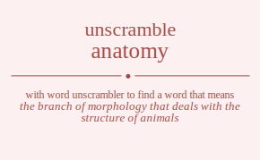

The word found after unscrambling anatomy means that the branch of morphology that deals with the structure of animals, alternative names for the body of a human being, a detailed analysis, .

The word found after unscrambling anatomy means that the branch of morphology that deals with the structure of animals, alternative names for the body of a human being, a detailed analysis, .
You can also find solutions for different combinations of letters in anatomy like anatomy anatoym anatmoy anatmyo anatyom anatymo anaotmy anaotym anaomty anaomyt anaoytm anaoymt anamtoy anamtyo anamoty anamoyt anamyto anamyot anaytom anaytmo anayotm anayomt anaymto anaymot antaomy antaoym antamoy antamyo antayom antaymo antoamy antoaym antomay antomya antoyam antoyma antmaoy antmayo antmoay antmoya antmyao antmyoa antyaom antyamo antyoam antyoma antymao antymoa anoatmy anoatym anoamty anoamyt anoaytm anoaymt anotamy anotaym anotmay anotmya anotyam anotyma anomaty anomayt anomtay anomtya anomyat anomyta anoyatm anoyamt anoytam anoytma anoymat anoymta anmatoy anmatyo anmaoty anmaoyt anmayto anmayot anmtaoy anmtayo anmtoay anmtoya anmtyao anmtyoa anmoaty anmoayt anmotay anmotya anmoyat anmoyta anmyato anmyaot anmytao anmytoa anmyoat anmyota anyatom anyatmo anyaotm anyaomt anyamto anyamot anytaom anytamo anytoam anytoma anytmao anytmoa anyoatm anyoamt anyotam anyotma anyomat anyomta anymato anymaot anymtao anymtoa anymoat anymota aantomy aantoym aantmoy aantmyo aantyom aantymo aanotmy aanotym aanomty aanomyt aanoytm aanoymt aanmtoy aanmtyo aanmoty aanmoyt aanmyto aanmyot aanytom aanytmo aanyotm aanyomt aanymto aanymot aatnomy aatnoym aatnmoy aatnmyo aatnyom aatnymo aatonmy aatonym aatomny aatomyn aatoynm aatoymn aatmnoy aatmnyo aatmony aatmoyn aatmyno aatmyon aatynom aatynmo aatyonm aatyomn aatymno aatymon aaontmy aaontym aaonmty aaonmyt aaonytm aaonymt aaotnmy aaotnym aaotmny aaotmyn aaotynm aaotymn aaomnty aaomnyt aaomtny aaomtyn aaomynt aaomytn aaoyntm aaoynmt aaoytnm aaoytmn aaoymnt aaoymtn aamntoy aamntyo aamnoty aamnoyt aamnyto aamnyot aamtnoy aamtnyo aamtony aamtoyn aamtyno aamtyon aamonty aamonyt aamotny aamotyn aamoynt aamoytn aamynto aamynot aamytno aamyton aamyont aamyotn aayntom aayntmo aaynotm aaynomt aaynmto aaynmot aaytnom aaytnmo aaytonm aaytomn aaytmno aaytmon aayontm aayonmt aayotnm aayotmn aayomnt aayomtn aaymnto aaymnot aaymtno aaymton aaymont aaymotn atnaomy atnaoym atnamoy atnamyo atnayom atnaymo atnoamy atnoaym atnomay atnomya atnoyam atnoyma atnmaoy atnmayo atnmoay atnmoya atnmyao atnmyoa atnyaom atnyamo atnyoam atnyoma atnymao atnymoa atanomy atanoym atanmoy atanmyo atanyom atanymo ataonmy ataonym ataomny ataomyn ataoynm ataoymn atamnoy atamnyo atamony atamoyn atamyno atamyon ataynom ataynmo atayonm atayomn ataymno ataymon atonamy atonaym atonmay atonmya atonyam atonyma atoanmy atoanym atoamny atoamyn atoaynm atoaymn atomnay atomnya atomany atomayn atomyna atomyan atoynam atoynma atoyanm atoyamn atoymna atoyman atmnaoy atmnayo atmnoay atmnoya atmnyao atmnyoa atmanoy atmanyo atmaony atmaoyn atmayno atmayon atmonay atmonya atmoany atmoayn atmoyna atmoyan atmynao atmynoa atmyano atmyaon atmyona atmyoan atynaom atynamo atynoam atynoma atynmao atynmoa atyanom atyanmo atyaonm atyaomn atyamno atyamon atyonam atyonma atyoanm atyoamn atyomna atyoman atymnao atymnoa atymano atymaon atymona atymoan aonatmy aonatym aonamty aonamyt aonaytm aonaymt aontamy aontaym aontmay aontmya aontyam aontyma aonmaty aonmayt aonmtay aonmtya aonmyat aonmyta aonyatm aonyamt aonytam aonytma aonymat aonymta aoantmy aoantym aoanmty aoanmyt aoanytm aoanymt aoatnmy aoatnym aoatmny aoatmyn aoatynm aoatymn aoamnty aoamnyt aoamtny aoamtyn aoamynt aoamytn aoayntm aoaynmt aoaytnm aoaytmn aoaymnt aoaymtn aotnamy aotnaym aotnmay aotnmya aotnyam aotnyma aotanmy aotanym aotamny aotamyn aotaynm aotaymn aotmnay aotmnya aotmany aotmayn aotmyna aotmyan aotynam aotynma aotyanm aotyamn aotymna aotyman aomnaty aomnayt aomntay aomntya aomnyat aomnyta aomanty aomanyt aomatny aomatyn aomaynt aomaytn aomtnay aomtnya aomtany aomtayn aomtyna aomtyan aomynat aomynta aomyant aomyatn aomytna aomytan aoynatm aoynamt aoyntam aoyntma aoynmat aoynmta aoyantm aoyanmt aoyatnm aoyatmn aoyamnt aoyamtn aoytnam aoytnma aoytanm aoytamn aoytmna aoytman aoymnat aoymnta aoymant aoymatn aoymtna aoymtan amnatoy amnatyo amnaoty amnaoyt amnayto amnayot amntaoy amntayo amntoay amntoya amntyao amntyoa amnoaty amnoayt amnotay amnotya amnoyat amnoyta amnyato amnyaot amnytao amnytoa amnyoat amnyota amantoy amantyo amanoty amanoyt amanyto amanyot amatnoy amatnyo amatony amatoyn amatyno amatyon amaonty amaonyt amaotny amaotyn amaoynt amaoytn amaynto amaynot amaytno amayton amayont amayotn amtnaoy amtnayo amtnoay amtnoya amtnyao amtnyoa amtanoy amtanyo amtaony amtaoyn amtayno amtayon amtonay amtonya amtoany amtoayn amtoyna amtoyan amtynao amtynoa amtyano amtyaon amtyona amtyoan amonaty amonayt amontay amontya amonyat amonyta amoanty amoanyt amoatny amoatyn amoaynt amoaytn amotnay amotnya amotany amotayn amotyna amotyan amoynat amoynta amoyant amoyatn amoytna amoytan amynato amynaot amyntao amyntoa amynoat amynota amyanto amyanot amyatno amyaton amyaont amyaotn amytnao amytnoa amytano amytaon amytona amytoan amyonat amyonta amyoant amyoatn amyotna amyotan aynatom aynatmo aynaotm aynaomt aynamto aynamot ayntaom ayntamo ayntoam ayntoma ayntmao ayntmoa aynoatm aynoamt aynotam aynotma aynomat aynomta aynmato aynmaot aynmtao aynmtoa aynmoat aynmota ayantom ayantmo ayanotm ayanomt ayanmto ayanmot ayatnom ayatnmo ayatonm ayatomn ayatmno ayatmon ayaontm ayaonmt ayaotnm ayaotmn ayaomnt ayaomtn ayamnto ayamnot ayamtno ayamton ayamont ayamotn aytnaom aytnamo aytnoam aytnoma aytnmao aytnmoa aytanom aytanmo aytaonm aytaomn aytamno aytamon aytonam aytonma aytoanm aytoamn aytomna aytoman aytmnao aytmnoa aytmano aytmaon aytmona aytmoan ayonatm ayonamt ayontam ayontma ayonmat ayonmta ayoantm ayoanmt ayoatnm ayoatmn ayoamnt ayoamtn ayotnam ayotnma ayotanm ayotamn ayotmna ayotman ayomnat ayomnta ayomant ayomatn ayomtna ayomtan aymnato aymnaot aymntao aymntoa aymnoat aymnota aymanto aymanot aymatno aymaton aymaont aymaotn aymtnao aymtnoa aymtano aymtaon aymtona aymtoan aymonat aymonta aymoant aymoatn aymotna aymotan naatomy naatoym naatmoy naatmyo naatyom naatymo naaotmy naaotym naaomty naaomyt naaoytm naaoymt naamtoy naamtyo naamoty naamoyt naamyto naamyot naaytom naaytmo naayotm naayomt naaymto naaymot nataomy nataoym natamoy natamyo natayom nataymo natoamy natoaym natomay natomya natoyam natoyma natmaoy natmayo natmoay natmoya natmyao natmyoa natyaom natyamo natyoam natyoma natymao natymoa naoatmy naoatym naoamty naoamyt naoaytm naoaymt naotamy naotaym naotmay naotmya naotyam naotyma naomaty naomayt naomtay naomtya naomyat naomyta naoyatm naoyamt naoytam naoytma naoymat naoymta namatoy namatyo namaoty namaoyt namayto namayot namtaoy namtayo namtoay namtoya namtyao namtyoa namoaty namoayt namotay namotya namoyat namoyta namyato namyaot namytao namytoa namyoat namyota nayatom nayatmo nayaotm nayaomt nayamto nayamot naytaom naytamo naytoam naytoma naytmao naytmoa nayoatm nayoamt nayotam nayotma nayomat nayomta naymato naymaot naymtao naymtoa naymoat naymota naatomy naatoym naatmoy naatmyo naatyom naatymo naaotmy naaotym naaomty naaomyt naaoytm naaoymt naamtoy naamtyo naamoty naamoyt naamyto naamyot naaytom naaytmo naayotm naayomt naaymto naaymot nataomy nataoym natamoy natamyo natayom nataymo natoamy natoaym natomay natomya natoyam natoyma natmaoy natmayo natmoay natmoya natmyao natmyoa natyaom natyamo natyoam natyoma natymao natymoa naoatmy naoatym naoamty naoamyt naoaytm naoaymt naotamy naotaym naotmay naotmya naotyam naotyma naomaty naomayt naomtay naomtya naomyat naomyta naoyatm naoyamt naoytam naoytma naoymat naoymta namatoy namatyo namaoty namaoyt namayto namayot namtaoy namtayo namtoay namtoya namtyao namtyoa namoaty namoayt namotay namotya namoyat namoyta namyato namyaot namytao namytoa namyoat namyota nayatom nayatmo nayaotm nayaomt nayamto nayamot naytaom naytamo naytoam naytoma naytmao naytmoa nayoatm nayoamt nayotam nayotma nayomat nayomta naymato naymaot naymtao naymtoa naymoat naymota ntaaomy ntaaoym ntaamoy ntaamyo ntaayom ntaaymo ntaoamy ntaoaym ntaomay ntaomya ntaoyam ntaoyma ntamaoy ntamayo ntamoay ntamoya ntamyao ntamyoa ntayaom ntayamo ntayoam ntayoma ntaymao ntaymoa ntaaomy ntaaoym ntaamoy ntaamyo ntaayom ntaaymo ntaoamy ntaoaym ntaomay ntaomya ntaoyam ntaoyma ntamaoy ntamayo ntamoay ntamoya ntamyao ntamyoa ntayaom ntayamo ntayoam ntayoma ntaymao ntaymoa ntoaamy ntoaaym ntoamay ntoamya ntoayam ntoayma ntoaamy ntoaaym ntoamay ntoamya ntoayam ntoayma ntomaay ntomaya ntomaay ntomaya ntomyaa ntomyaa ntoyaam ntoyama ntoyaam ntoyama ntoymaa ntoymaa ntmaaoy ntmaayo ntmaoay ntmaoya ntmayao ntmayoa ntmaaoy ntmaayo ntmaoay ntmaoya ntmayao ntmayoa ntmoaay ntmoaya ntmoaay ntmoaya ntmoyaa ntmoyaa ntmyaao ntmyaoa ntmyaao ntmyaoa ntmyoaa ntmyoaa ntyaaom ntyaamo ntyaoam ntyaoma ntyamao ntyamoa ntyaaom ntyaamo ntyaoam ntyaoma ntyamao ntyamoa ntyoaam ntyoama ntyoaam ntyoama ntyomaa ntyomaa ntymaao ntymaoa ntymaao ntymaoa ntymoaa ntymoaa noaatmy noaatym noaamty noaamyt noaaytm noaaymt noatamy noataym noatmay noatmya noatyam noatyma noamaty noamayt noamtay noamtya noamyat noamyta noayatm noayamt noaytam noaytma noaymat noaymta noaatmy noaatym noaamty noaamyt noaaytm noaaymt noatamy noataym noatmay noatmya noatyam noatyma noamaty noamayt noamtay noamtya noamyat noamyta noayatm noayamt noaytam noaytma noaymat noaymta notaamy notaaym notamay notamya notayam notayma notaamy notaaym notamay notamya notayam notayma notmaay notmaya notmaay notmaya notmyaa notmyaa notyaam notyama notyaam notyama notymaa notymaa nomaaty nomaayt nomatay nomatya nomayat nomayta nomaaty nomaayt nomatay nomatya nomayat nomayta nomtaay nomtaya nomtaay nomtaya nomtyaa nomtyaa nomyaat nomyata nomyaat nomyata nomytaa nomytaa noyaatm noyaamt noyatam noyatma noyamat noyamta noyaatm noyaamt noyatam noyatma noyamat noyamta noytaam noytama noytaam noytama noytmaa noytmaa noymaat noymata noymaat noymata noymtaa noymtaa nmaatoy nmaatyo nmaaoty nmaaoyt nmaayto nmaayot nmataoy nmatayo nmatoay nmatoya nmatyao nmatyoa nmaoaty nmaoayt nmaotay nmaotya nmaoyat nmaoyta nmayato nmayaot nmaytao nmaytoa nmayoat nmayota nmaatoy nmaatyo nmaaoty nmaaoyt nmaayto nmaayot nmataoy nmatayo nmatoay nmatoya nmatyao nmatyoa nmaoaty nmaoayt nmaotay nmaotya nmaoyat nmaoyta nmayato nmayaot nmaytao nmaytoa nmayoat nmayota nmtaaoy nmtaayo nmtaoay nmtaoya nmtayao nmtayoa nmtaaoy nmtaayo nmtaoay nmtaoya nmtayao nmtayoa nmtoaay nmtoaya nmtoaay nmtoaya nmtoyaa nmtoyaa nmtyaao nmtyaoa nmtyaao nmtyaoa nmtyoaa nmtyoaa nmoaaty nmoaayt nmoatay nmoatya nmoayat nmoayta nmoaaty nmoaayt nmoatay nmoatya nmoayat nmoayta nmotaay nmotaya nmotaay nmotaya nmotyaa nmotyaa nmoyaat nmoyata nmoyaat nmoyata nmoytaa nmoytaa nmyaato nmyaaot nmyatao nmyatoa nmyaoat nmyaota nmyaato nmyaaot nmyatao nmyatoa nmyaoat nmyaota nmytaao nmytaoa nmytaao nmytaoa nmytoaa nmytoaa nmyoaat nmyoata nmyoaat nmyoata nmyotaa nmyotaa nyaatom nyaatmo nyaaotm nyaaomt nyaamto nyaamot nyataom nyatamo nyatoam nyatoma nyatmao nyatmoa nyaoatm nyaoamt nyaotam nyaotma nyaomat nyaomta nyamato nyamaot nyamtao nyamtoa nyamoat nyamota nyaatom nyaatmo nyaaotm nyaaomt nyaamto nyaamot nyataom nyatamo nyatoam nyatoma nyatmao nyatmoa nyaoatm nyaoamt nyaotam nyaotma nyaomat nyaomta nyamato nyamaot nyamtao nyamtoa nyamoat nyamota nytaaom nytaamo nytaoam nytaoma nytamao nytamoa nytaaom nytaamo nytaoam nytaoma nytamao nytamoa nytoaam nytoama nytoaam nytoama nytomaa nytomaa nytmaao nytmaoa nytmaao nytmaoa nytmoaa nytmoaa nyoaatm nyoaamt nyoatam nyoatma nyoamat nyoamta nyoaatm nyoaamt nyoatam nyoatma nyoamat nyoamta nyotaam nyotama nyotaam nyotama nyotmaa nyotmaa nyomaat nyomata nyomaat nyomata nyomtaa nyomtaa nymaato nymaaot nymatao nymatoa nymaoat nymaota nymaato nymaaot nymatao nymatoa nymaoat nymaota nymtaao nymtaoa nymtaao nymtaoa nymtoaa nymtoaa nymoaat nymoata nymoaat nymoata nymotaa nymotaa aantomy aantoym aantmoy aantmyo aantyom aantymo aanotmy aanotym aanomty aanomyt aanoytm aanoymt aanmtoy aanmtyo aanmoty aanmoyt aanmyto aanmyot aanytom aanytmo aanyotm aanyomt aanymto aanymot aatnomy aatnoym aatnmoy aatnmyo aatnyom aatnymo aatonmy aatonym aatomny aatomyn aatoynm aatoymn aatmnoy aatmnyo aatmony aatmoyn aatmyno aatmyon aatynom aatynmo aatyonm aatyomn aatymno aatymon aaontmy aaontym aaonmty aaonmyt aaonytm aaonymt aaotnmy aaotnym aaotmny aaotmyn aaotynm aaotymn aaomnty aaomnyt aaomtny aaomtyn aaomynt aaomytn aaoyntm aaoynmt aaoytnm aaoytmn aaoymnt aaoymtn aamntoy aamntyo aamnoty aamnoyt aamnyto aamnyot aamtnoy aamtnyo aamtony aamtoyn aamtyno aamtyon aamonty aamonyt aamotny aamotyn aamoynt aamoytn aamynto aamynot aamytno aamyton aamyont aamyotn aayntom aayntmo aaynotm aaynomt aaynmto aaynmot aaytnom aaytnmo aaytonm aaytomn aaytmno aaytmon aayontm aayonmt aayotnm aayotmn aayomnt aayomtn aaymnto aaymnot aaymtno aaymton aaymont aaymotn anatomy anatoym anatmoy anatmyo anatyom anatymo anaotmy anaotym anaomty anaomyt anaoytm anaoymt anamtoy anamtyo anamoty anamoyt anamyto anamyot anaytom anaytmo anayotm anayomt anaymto anaymot antaomy antaoym antamoy antamyo antayom antaymo antoamy antoaym antomay antomya antoyam antoyma antmaoy antmayo antmoay antmoya antmyao antmyoa antyaom antyamo antyoam antyoma antymao antymoa anoatmy anoatym anoamty anoamyt anoaytm anoaymt anotamy anotaym anotmay anotmya anotyam anotyma anomaty anomayt anomtay anomtya anomyat anomyta anoyatm anoyamt anoytam anoytma anoymat anoymta anmatoy anmatyo anmaoty anmaoyt anmayto anmayot anmtaoy anmtayo anmtoay anmtoya anmtyao anmtyoa anmoaty anmoayt anmotay anmotya anmoyat anmoyta anmyato anmyaot anmytao anmytoa anmyoat anmyota anyatom anyatmo anyaotm anyaomt anyamto anyamot anytaom anytamo anytoam anytoma anytmao anytmoa anyoatm anyoamt anyotam anyotma anyomat anyomta anymato anymaot anymtao anymtoa anymoat anymota atanomy atanoym atanmoy atanmyo atanyom atanymo ataonmy ataonym ataomny ataomyn ataoynm ataoymn atamnoy atamnyo atamony atamoyn atamyno atamyon ataynom ataynmo atayonm atayomn ataymno ataymon atnaomy atnaoym atnamoy atnamyo atnayom atnaymo atnoamy atnoaym atnomay atnomya atnoyam atnoyma atnmaoy atnmayo atnmoay atnmoya atnmyao atnmyoa atnyaom atnyamo atnyoam atnyoma atnymao atnymoa atoanmy atoanym atoamny atoamyn atoaynm atoaymn atonamy atonaym atonmay atonmya atonyam atonyma atomany atomayn atomnay atomnya atomyan atomyna atoyanm atoyamn atoynam atoynma atoyman atoymna atmanoy atmanyo atmaony atmaoyn atmayno atmayon atmnaoy atmnayo atmnoay atmnoya atmnyao atmnyoa atmoany atmoayn atmonay atmonya atmoyan atmoyna atmyano atmyaon atmynao atmynoa atmyoan atmyona atyanom atyanmo atyaonm atyaomn atyamno atyamon atynaom atynamo atynoam atynoma atynmao atynmoa atyoanm atyoamn atyonam atyonma atyoman atyomna atymano atymaon atymnao atymnoa atymoan atymona aoantmy aoantym aoanmty aoanmyt aoanytm aoanymt aoatnmy aoatnym aoatmny aoatmyn aoatynm aoatymn aoamnty aoamnyt aoamtny aoamtyn aoamynt aoamytn aoayntm aoaynmt aoaytnm aoaytmn aoaymnt aoaymtn aonatmy aonatym aonamty aonamyt aonaytm aonaymt aontamy aontaym aontmay aontmya aontyam aontyma aonmaty aonmayt aonmtay aonmtya aonmyat aonmyta aonyatm aonyamt aonytam aonytma aonymat aonymta aotanmy aotanym aotamny aotamyn aotaynm aotaymn aotnamy aotnaym aotnmay aotnmya aotnyam aotnyma aotmany aotmayn aotmnay aotmnya aotmyan aotmyna aotyanm aotyamn aotynam aotynma aotyman aotymna aomanty aomanyt aomatny aomatyn aomaynt aomaytn aomnaty aomnayt aomntay aomntya aomnyat aomnyta aomtany aomtayn aomtnay aomtnya aomtyan aomtyna aomyant aomyatn aomynat aomynta aomytan aomytna aoyantm aoyanmt aoyatnm aoyatmn aoyamnt aoyamtn aoynatm aoynamt aoyntam aoyntma aoynmat aoynmta aoytanm aoytamn aoytnam aoytnma aoytman aoytmna aoymant aoymatn aoymnat aoymnta aoymtan aoymtna amantoy amantyo amanoty amanoyt amanyto amanyot amatnoy amatnyo amatony amatoyn amatyno amatyon amaonty amaonyt amaotny amaotyn amaoynt amaoytn amaynto amaynot amaytno amayton amayont amayotn amnatoy amnatyo amnaoty amnaoyt amnayto amnayot amntaoy amntayo amntoay amntoya amntyao amntyoa amnoaty amnoayt amnotay amnotya amnoyat amnoyta amnyato amnyaot amnytao amnytoa amnyoat amnyota amtanoy amtanyo amtaony amtaoyn amtayno amtayon amtnaoy amtnayo amtnoay amtnoya amtnyao amtnyoa amtoany amtoayn amtonay amtonya amtoyan amtoyna amtyano amtyaon amtynao amtynoa amtyoan amtyona amoanty amoanyt amoatny amoatyn amoaynt amoaytn amonaty amonayt amontay amontya amonyat amonyta amotany amotayn amotnay amotnya amotyan amotyna amoyant amoyatn amoynat amoynta amoytan amoytna amyanto amyanot amyatno amyaton amyaont amyaotn amynato amynaot amyntao amyntoa amynoat amynota amytano amytaon amytnao amytnoa amytoan amytona amyoant amyoatn amyonat amyonta amyotan amyotna ayantom ayantmo ayanotm ayanomt ayanmto ayanmot ayatnom ayatnmo ayatonm ayatomn ayatmno ayatmon ayaontm ayaonmt ayaotnm ayaotmn ayaomnt ayaomtn ayamnto ayamnot ayamtno ayamton ayamont ayamotn aynatom aynatmo aynaotm aynaomt aynamto aynamot ayntaom ayntamo ayntoam ayntoma ayntmao ayntmoa aynoatm aynoamt aynotam aynotma aynomat aynomta aynmato aynmaot aynmtao aynmtoa aynmoat aynmota aytanom aytanmo aytaonm aytaomn aytamno aytamon aytnaom aytnamo aytnoam aytnoma aytnmao aytnmoa aytoanm aytoamn aytonam aytonma aytoman aytomna aytmano aytmaon aytmnao aytmnoa aytmoan aytmona ayoantm ayoanmt ayoatnm ayoatmn ayoamnt ayoamtn ayonatm ayonamt ayontam ayontma ayonmat ayonmta ayotanm ayotamn ayotnam ayotnma ayotman ayotmna ayomant ayomatn ayomnat ayomnta ayomtan ayomtna aymanto aymanot aymatno aymaton aymaont aymaotn aymnato aymnaot aymntao aymntoa aymnoat aymnota aymtano aymtaon aymtnao aymtnoa aymtoan aymtona aymoant aymoatn aymonat aymonta aymotan aymotna tanaomy tanaoym tanamoy tanamyo tanayom tanaymo tanoamy tanoaym tanomay tanomya tanoyam tanoyma tanmaoy tanmayo tanmoay tanmoya tanmyao tanmyoa tanyaom tanyamo tanyoam tanyoma tanymao tanymoa taanomy taanoym taanmoy taanmyo taanyom taanymo taaonmy taaonym taaomny taaomyn taaoynm taaoymn taamnoy taamnyo taamony taamoyn taamyno taamyon taaynom taaynmo taayonm taayomn taaymno taaymon taonamy taonaym taonmay taonmya taonyam taonyma taoanmy taoanym taoamny taoamyn taoaynm taoaymn taomnay taomnya taomany taomayn taomyna taomyan taoynam taoynma taoyanm taoyamn taoymna taoyman tamnaoy tamnayo tamnoay tamnoya tamnyao tamnyoa tamanoy tamanyo tamaony tamaoyn tamayno tamayon tamonay tamonya tamoany tamoayn tamoyna tamoyan tamynao tamynoa tamyano tamyaon tamyona tamyoan taynaom taynamo taynoam taynoma taynmao taynmoa tayanom tayanmo tayaonm tayaomn tayamno tayamon tayonam tayonma tayoanm tayoamn tayomna tayoman taymnao taymnoa taymano taymaon taymona taymoan tnaaomy tnaaoym tnaamoy tnaamyo tnaayom tnaaymo tnaoamy tnaoaym tnaomay tnaomya tnaoyam tnaoyma tnamaoy tnamayo tnamoay tnamoya tnamyao tnamyoa tnayaom tnayamo tnayoam tnayoma tnaymao tnaymoa tnaaomy tnaaoym tnaamoy tnaamyo tnaayom tnaaymo tnaoamy tnaoaym tnaomay tnaomya tnaoyam tnaoyma tnamaoy tnamayo tnamoay tnamoya tnamyao tnamyoa tnayaom tnayamo tnayoam tnayoma tnaymao tnaymoa tnoaamy tnoaaym tnoamay tnoamya tnoayam tnoayma tnoaamy tnoaaym tnoamay tnoamya tnoayam tnoayma tnomaay tnomaya tnomaay tnomaya tnomyaa tnomyaa tnoyaam tnoyama tnoyaam tnoyama tnoymaa tnoymaa tnmaaoy tnmaayo tnmaoay tnmaoya tnmayao tnmayoa tnmaaoy tnmaayo tnmaoay tnmaoya tnmayao tnmayoa tnmoaay tnmoaya tnmoaay tnmoaya tnmoyaa tnmoyaa tnmyaao tnmyaoa tnmyaao tnmyaoa tnmyoaa tnmyoaa tnyaaom tnyaamo tnyaoam tnyaoma tnyamao tnyamoa tnyaaom tnyaamo tnyaoam tnyaoma tnyamao tnyamoa tnyoaam tnyoama tnyoaam tnyoama tnyomaa tnyomaa tnymaao tnymaoa tnymaao tnymaoa tnymoaa tnymoaa taanomy taanoym taanmoy taanmyo taanyom taanymo taaonmy taaonym taaomny taaomyn taaoynm taaoymn taamnoy taamnyo taamony taamoyn taamyno taamyon taaynom taaynmo taayonm taayomn taaymno taaymon tanaomy tanaoym tanamoy tanamyo tanayom tanaymo tanoamy tanoaym tanomay tanomya tanoyam tanoyma tanmaoy tanmayo tanmoay tanmoya tanmyao tanmyoa tanyaom tanyamo tanyoam tanyoma tanymao tanymoa taoanmy taoanym taoamny taoamyn taoaynm taoaymn taonamy taonaym taonmay taonmya taonyam taonyma taomany taomayn taomnay taomnya taomyan taomyna taoyanm taoyamn taoynam taoynma taoyman taoymna tamanoy tamanyo tamaony tamaoyn tamayno tamayon tamnaoy tamnayo tamnoay tamnoya tamnyao tamnyoa tamoany tamoayn tamonay tamonya tamoyan tamoyna tamyano tamyaon tamynao tamynoa tamyoan tamyona tayanom tayanmo tayaonm tayaomn tayamno tayamon taynaom taynamo taynoam taynoma taynmao taynmoa tayoanm tayoamn tayonam tayonma tayoman tayomna taymano taymaon taymnao taymnoa taymoan taymona toanamy toanaym toanmay toanmya toanyam toanyma toaanmy toaanym toaamny toaamyn toaaynm toaaymn toamnay toamnya toamany toamayn toamyna toamyan toaynam toaynma toayanm toayamn toaymna toayman tonaamy tonaaym tonamay tonamya tonayam tonayma tonaamy tonaaym tonamay tonamya tonayam tonayma tonmaay tonmaya tonmaay tonmaya tonmyaa tonmyaa tonyaam tonyama tonyaam tonyama tonymaa tonymaa toaanmy toaanym toaamny toaamyn toaaynm toaaymn toanamy toanaym toanmay toanmya toanyam toanyma toamany toamayn toamnay toamnya toamyan toamyna toayanm toayamn toaynam toaynma toayman toaymna tomanay tomanya tomaany tomaayn tomayna tomayan tomnaay tomnaya tomnaay tomnaya tomnyaa tomnyaa tomaany tomaayn tomanay tomanya tomayan tomayna tomyana tomyaan tomynaa tomynaa tomyaan tomyana toyanam toyanma toyaanm toyaamn toyamna toyaman toynaam toynama toynaam toynama toynmaa toynmaa toyaanm toyaamn toyanam toyanma toyaman toyamna toymana toymaan toymnaa toymnaa toymaan toymana tmanaoy tmanayo tmanoay tmanoya tmanyao tmanyoa tmaanoy tmaanyo tmaaony tmaaoyn tmaayno tmaayon tmaonay tmaonya tmaoany tmaoayn tmaoyna tmaoyan tmaynao tmaynoa tmayano tmayaon tmayona tmayoan tmnaaoy tmnaayo tmnaoay tmnaoya tmnayao tmnayoa tmnaaoy tmnaayo tmnaoay tmnaoya tmnayao tmnayoa tmnoaay tmnoaya tmnoaay tmnoaya tmnoyaa tmnoyaa tmnyaao tmnyaoa tmnyaao tmnyaoa tmnyoaa tmnyoaa tmaanoy tmaanyo tmaaony tmaaoyn tmaayno tmaayon tmanaoy tmanayo tmanoay tmanoya tmanyao tmanyoa tmaoany tmaoayn tmaonay tmaonya tmaoyan tmaoyna tmayano tmayaon tmaynao tmaynoa tmayoan tmayona tmoanay tmoanya tmoaany tmoaayn tmoayna tmoayan tmonaay tmonaya tmonaay tmonaya tmonyaa tmonyaa tmoaany tmoaayn tmoanay tmoanya tmoayan tmoayna tmoyana tmoyaan tmoynaa tmoynaa tmoyaan tmoyana tmyanao tmyanoa tmyaano tmyaaon tmyaona tmyaoan tmynaao tmynaoa tmynaao tmynaoa tmynoaa tmynoaa tmyaano tmyaaon tmyanao tmyanoa tmyaoan tmyaona tmyoana tmyoaan tmyonaa tmyonaa tmyoaan tmyoana tyanaom tyanamo tyanoam tyanoma tyanmao tyanmoa tyaanom tyaanmo tyaaonm tyaaomn tyaamno tyaamon tyaonam tyaonma tyaoanm tyaoamn tyaomna tyaoman tyamnao tyamnoa tyamano tyamaon tyamona tyamoan tynaaom tynaamo tynaoam tynaoma tynamao tynamoa tynaaom tynaamo tynaoam tynaoma tynamao tynamoa tynoaam tynoama tynoaam tynoama tynomaa tynomaa tynmaao tynmaoa tynmaao tynmaoa tynmoaa tynmoaa tyaanom tyaanmo tyaaonm tyaaomn tyaamno tyaamon tyanaom tyanamo tyanoam tyanoma tyanmao tyanmoa tyaoanm tyaoamn tyaonam tyaonma tyaoman tyaomna tyamano tyamaon tyamnao tyamnoa tyamoan tyamona tyoanam tyoanma tyoaanm tyoaamn tyoamna tyoaman tyonaam tyonama tyonaam tyonama tyonmaa tyonmaa tyoaanm tyoaamn tyoanam tyoanma tyoaman tyoamna tyomana tyomaan tyomnaa tyomnaa tyomaan tyomana tymanao tymanoa tymaano tymaaon tymaona tymaoan tymnaao tymnaoa tymnaao tymnaoa tymnoaa tymnoaa tymaano tymaaon tymanao tymanoa tymaoan tymaona tymoana tymoaan tymonaa tymonaa tymoaan tymoana oanatmy oanatym oanamty oanamyt oanaytm oanaymt oantamy oantaym oantmay oantmya oantyam oantyma oanmaty oanmayt oanmtay oanmtya oanmyat oanmyta oanyatm oanyamt oanytam oanytma oanymat oanymta oaantmy oaantym oaanmty oaanmyt oaanytm oaanymt oaatnmy oaatnym oaatmny oaatmyn oaatynm oaatymn oaamnty oaamnyt oaamtny oaamtyn oaamynt oaamytn oaayntm oaaynmt oaaytnm oaaytmn oaaymnt oaaymtn oatnamy oatnaym oatnmay oatnmya oatnyam oatnyma oatanmy oatanym oatamny oatamyn oataynm oataymn oatmnay oatmnya oatmany oatmayn oatmyna oatmyan oatynam oatynma oatyanm oatyamn oatymna oatyman oamnaty oamnayt oamntay oamntya oamnyat oamnyta oamanty oamanyt oamatny oamatyn oamaynt oamaytn oamtnay oamtnya oamtany oamtayn oamtyna oamtyan oamynat oamynta oamyant oamyatn oamytna oamytan oaynatm oaynamt oayntam oayntma oaynmat oaynmta oayantm oayanmt oayatnm oayatmn oayamnt oayamtn oaytnam oaytnma oaytanm oaytamn oaytmna oaytman oaymnat oaymnta oaymant oaymatn oaymtna oaymtan onaatmy onaatym onaamty onaamyt onaaytm onaaymt onatamy onataym onatmay onatmya onatyam onatyma onamaty onamayt onamtay onamtya onamyat onamyta onayatm onayamt onaytam onaytma onaymat onaymta onaatmy onaatym onaamty onaamyt onaaytm onaaymt onatamy onataym onatmay onatmya onatyam onatyma onamaty onamayt onamtay onamtya onamyat onamyta onayatm onayamt onaytam onaytma onaymat onaymta ontaamy ontaaym ontamay ontamya ontayam ontayma ontaamy ontaaym ontamay ontamya ontayam ontayma ontmaay ontmaya ontmaay ontmaya ontmyaa ontmyaa ontyaam ontyama ontyaam ontyama ontymaa ontymaa onmaaty onmaayt onmatay onmatya onmayat onmayta onmaaty onmaayt onmatay onmatya onmayat onmayta onmtaay onmtaya onmtaay onmtaya onmtyaa onmtyaa onmyaat onmyata onmyaat onmyata onmytaa onmytaa onyaatm onyaamt onyatam onyatma onyamat onyamta onyaatm onyaamt onyatam onyatma onyamat onyamta onytaam onytama onytaam onytama onytmaa onytmaa onymaat onymata onymaat onymata onymtaa onymtaa oaantmy oaantym oaanmty oaanmyt oaanytm oaanymt oaatnmy oaatnym oaatmny oaatmyn oaatynm oaatymn oaamnty oaamnyt oaamtny oaamtyn oaamynt oaamytn oaayntm oaaynmt oaaytnm oaaytmn oaaymnt oaaymtn oanatmy oanatym oanamty oanamyt oanaytm oanaymt oantamy oantaym oantmay oantmya oantyam oantyma oanmaty oanmayt oanmtay oanmtya oanmyat oanmyta oanyatm oanyamt oanytam oanytma oanymat oanymta oatanmy oatanym oatamny oatamyn oataynm oataymn oatnamy oatnaym oatnmay oatnmya oatnyam oatnyma oatmany oatmayn oatmnay oatmnya oatmyan oatmyna oatyanm oatyamn oatynam oatynma oatyman oatymna oamanty oamanyt oamatny oamatyn oamaynt oamaytn oamnaty oamnayt oamntay oamntya oamnyat oamnyta oamtany oamtayn oamtnay oamtnya oamtyan oamtyna oamyant oamyatn oamynat oamynta oamytan oamytna oayantm oayanmt oayatnm oayatmn oayamnt oayamtn oaynatm oaynamt oayntam oayntma oaynmat oaynmta oaytanm oaytamn oaytnam oaytnma oaytman oaytmna oaymant oaymatn oaymnat oaymnta oaymtan oaymtna otanamy otanaym otanmay otanmya otanyam otanyma otaanmy otaanym otaamny otaamyn otaaynm otaaymn otamnay otamnya otamany otamayn otamyna otamyan otaynam otaynma otayanm otayamn otaymna otayman otnaamy otnaaym otnamay otnamya otnayam otnayma otnaamy otnaaym otnamay otnamya otnayam otnayma otnmaay otnmaya otnmaay otnmaya otnmyaa otnmyaa otnyaam otnyama otnyaam otnyama otnymaa otnymaa otaanmy otaanym otaamny otaamyn otaaynm otaaymn otanamy otanaym otanmay otanmya otanyam otanyma otamany otamayn otamnay otamnya otamyan otamyna otayanm otayamn otaynam otaynma otayman otaymna otmanay otmanya otmaany otmaayn otmayna otmayan otmnaay otmnaya otmnaay otmnaya otmnyaa otmnyaa otmaany otmaayn otmanay otmanya otmayan otmayna otmyana otmyaan otmynaa otmynaa otmyaan otmyana otyanam otyanma otyaanm otyaamn otyamna otyaman otynaam otynama otynaam otynama otynmaa otynmaa otyaanm otyaamn otyanam otyanma otyaman otyamna otymana otymaan otymnaa otymnaa otymaan otymana omanaty omanayt omantay omantya omanyat omanyta omaanty omaanyt omaatny omaatyn omaaynt omaaytn omatnay omatnya omatany omatayn omatyna omatyan omaynat omaynta omayant omayatn omaytna omaytan omnaaty omnaayt omnatay omnatya omnayat omnayta omnaaty omnaayt omnatay omnatya omnayat omnayta omntaay omntaya omntaay omntaya omntyaa omntyaa omnyaat omnyata omnyaat omnyata omnytaa omnytaa omaanty omaanyt omaatny omaatyn omaaynt omaaytn omanaty omanayt omantay omantya omanyat omanyta omatany omatayn omatnay omatnya omatyan omatyna omayant omayatn omaynat omaynta omaytan omaytna omtanay omtanya omtaany omtaayn omtayna omtayan omtnaay omtnaya omtnaay omtnaya omtnyaa omtnyaa omtaany omtaayn omtanay omtanya omtayan omtayna omtyana omtyaan omtynaa omtynaa omtyaan omtyana omyanat omyanta omyaant omyaatn omyatna omyatan omynaat omynata omynaat omynata omyntaa omyntaa omyaant omyaatn omyanat omyanta omyatan omyatna omytana omytaan omytnaa omytnaa omytaan omytana oyanatm oyanamt oyantam oyantma oyanmat oyanmta oyaantm oyaanmt oyaatnm oyaatmn oyaamnt oyaamtn oyatnam oyatnma oyatanm oyatamn oyatmna oyatman oyamnat oyamnta oyamant oyamatn oyamtna oyamtan oynaatm oynaamt oynatam oynatma oynamat oynamta oynaatm oynaamt oynatam oynatma oynamat oynamta oyntaam oyntama oyntaam oyntama oyntmaa oyntmaa oynmaat oynmata oynmaat oynmata oynmtaa oynmtaa oyaantm oyaanmt oyaatnm oyaatmn oyaamnt oyaamtn oyanatm oyanamt oyantam oyantma oyanmat oyanmta oyatanm oyatamn oyatnam oyatnma oyatman oyatmna oyamant oyamatn oyamnat oyamnta oyamtan oyamtna oytanam oytanma oytaanm oytaamn oytamna oytaman oytnaam oytnama oytnaam oytnama oytnmaa oytnmaa oytaanm oytaamn oytanam oytanma oytaman oytamna oytmana oytmaan oytmnaa oytmnaa oytmaan oytmana oymanat oymanta oymaant oymaatn oymatna oymatan oymnaat oymnata oymnaat oymnata oymntaa oymntaa oymaant oymaatn oymanat oymanta oymatan oymatna oymtana oymtaan oymtnaa oymtnaa oymtaan oymtana manatoy manatyo manaoty manaoyt manayto manayot mantaoy mantayo mantoay mantoya mantyao mantyoa manoaty manoayt manotay manotya manoyat manoyta manyato manyaot manytao manytoa manyoat manyota maantoy maantyo maanoty maanoyt maanyto maanyot maatnoy maatnyo maatony maatoyn maatyno maatyon maaonty maaonyt maaotny maaotyn maaoynt maaoytn maaynto maaynot maaytno maayton maayont maayotn matnaoy matnayo matnoay matnoya matnyao matnyoa matanoy matanyo mataony mataoyn matayno matayon matonay matonya matoany matoayn matoyna matoyan matynao matynoa matyano matyaon matyona matyoan maonaty maonayt maontay maontya maonyat maonyta maoanty maoanyt maoatny maoatyn maoaynt maoaytn maotnay maotnya maotany maotayn maotyna maotyan maoynat maoynta maoyant maoyatn maoytna maoytan maynato maynaot mayntao mayntoa maynoat maynota mayanto mayanot mayatno mayaton mayaont mayaotn maytnao maytnoa maytano maytaon maytona maytoan mayonat mayonta mayoant mayoatn mayotna mayotan mnaatoy mnaatyo mnaaoty mnaaoyt mnaayto mnaayot mnataoy mnatayo mnatoay mnatoya mnatyao mnatyoa mnaoaty mnaoayt mnaotay mnaotya mnaoyat mnaoyta mnayato mnayaot mnaytao mnaytoa mnayoat mnayota mnaatoy mnaatyo mnaaoty mnaaoyt mnaayto mnaayot mnataoy mnatayo mnatoay mnatoya mnatyao mnatyoa mnaoaty mnaoayt mnaotay mnaotya mnaoyat mnaoyta mnayato mnayaot mnaytao mnaytoa mnayoat mnayota mntaaoy mntaayo mntaoay mntaoya mntayao mntayoa mntaaoy mntaayo mntaoay mntaoya mntayao mntayoa mntoaay mntoaya mntoaay mntoaya mntoyaa mntoyaa mntyaao mntyaoa mntyaao mntyaoa mntyoaa mntyoaa mnoaaty mnoaayt mnoatay mnoatya mnoayat mnoayta mnoaaty mnoaayt mnoatay mnoatya mnoayat mnoayta mnotaay mnotaya mnotaay mnotaya mnotyaa mnotyaa mnoyaat mnoyata mnoyaat mnoyata mnoytaa mnoytaa mnyaato mnyaaot mnyatao mnyatoa mnyaoat mnyaota mnyaato mnyaaot mnyatao mnyatoa mnyaoat mnyaota mnytaao mnytaoa mnytaao mnytaoa mnytoaa mnytoaa mnyoaat mnyoata mnyoaat mnyoata mnyotaa mnyotaa maantoy maantyo maanoty maanoyt maanyto maanyot maatnoy maatnyo maatony maatoyn maatyno maatyon maaonty maaonyt maaotny maaotyn maaoynt maaoytn maaynto maaynot maaytno maayton maayont maayotn manatoy manatyo manaoty manaoyt manayto manayot mantaoy mantayo mantoay mantoya mantyao mantyoa manoaty manoayt manotay manotya manoyat manoyta manyato manyaot manytao manytoa manyoat manyota matanoy matanyo mataony mataoyn matayno matayon matnaoy matnayo matnoay matnoya matnyao matnyoa matoany matoayn matonay matonya matoyan matoyna matyano matyaon matynao matynoa matyoan matyona maoanty maoanyt maoatny maoatyn maoaynt maoaytn maonaty maonayt maontay maontya maonyat maonyta maotany maotayn maotnay maotnya maotyan maotyna maoyant maoyatn maoynat maoynta maoytan maoytna mayanto mayanot mayatno mayaton mayaont mayaotn maynato maynaot mayntao mayntoa maynoat maynota maytano maytaon maytnao maytnoa maytoan maytona mayoant mayoatn mayonat mayonta mayotan mayotna mtanaoy mtanayo mtanoay mtanoya mtanyao mtanyoa mtaanoy mtaanyo mtaaony mtaaoyn mtaayno mtaayon mtaonay mtaonya mtaoany mtaoayn mtaoyna mtaoyan mtaynao mtaynoa mtayano mtayaon mtayona mtayoan mtnaaoy mtnaayo mtnaoay mtnaoya mtnayao mtnayoa mtnaaoy mtnaayo mtnaoay mtnaoya mtnayao mtnayoa mtnoaay mtnoaya mtnoaay mtnoaya mtnoyaa mtnoyaa mtnyaao mtnyaoa mtnyaao mtnyaoa mtnyoaa mtnyoaa mtaanoy mtaanyo mtaaony mtaaoyn mtaayno mtaayon mtanaoy mtanayo mtanoay mtanoya mtanyao mtanyoa mtaoany mtaoayn mtaonay mtaonya mtaoyan mtaoyna mtayano mtayaon mtaynao mtaynoa mtayoan mtayona mtoanay mtoanya mtoaany mtoaayn mtoayna mtoayan mtonaay mtonaya mtonaay mtonaya mtonyaa mtonyaa mtoaany mtoaayn mtoanay mtoanya mtoayan mtoayna mtoyana mtoyaan mtoynaa mtoynaa mtoyaan mtoyana mtyanao mtyanoa mtyaano mtyaaon mtyaona mtyaoan mtynaao mtynaoa mtynaao mtynaoa mtynoaa mtynoaa mtyaano mtyaaon mtyanao mtyanoa mtyaoan mtyaona mtyoana mtyoaan mtyonaa mtyonaa mtyoaan mtyoana moanaty moanayt moantay moantya moanyat moanyta moaanty moaanyt moaatny moaatyn moaaynt moaaytn moatnay moatnya moatany moatayn moatyna moatyan moaynat moaynta moayant moayatn moaytna moaytan monaaty monaayt monatay monatya monayat monayta monaaty monaayt monatay monatya monayat monayta montaay montaya montaay montaya montyaa montyaa monyaat monyata monyaat monyata monytaa monytaa moaanty moaanyt moaatny moaatyn moaaynt moaaytn moanaty moanayt moantay moantya moanyat moanyta moatany moatayn moatnay moatnya moatyan moatyna moayant moayatn moaynat moaynta moaytan moaytna motanay motanya motaany motaayn motayna motayan motnaay motnaya motnaay motnaya motnyaa motnyaa motaany motaayn motanay motanya motayan motayna motyana motyaan motynaa motynaa motyaan motyana moyanat moyanta moyaant moyaatn moyatna moyatan moynaat moynata moynaat moynata moyntaa moyntaa moyaant moyaatn moyanat moyanta moyatan moyatna moytana moytaan moytnaa moytnaa moytaan moytana myanato myanaot myantao myantoa myanoat myanota myaanto myaanot myaatno myaaton myaaont myaaotn myatnao myatnoa myatano myataon myatona myatoan myaonat myaonta myaoant myaoatn myaotna myaotan mynaato mynaaot mynatao mynatoa mynaoat mynaota mynaato mynaaot mynatao mynatoa mynaoat mynaota myntaao myntaoa myntaao myntaoa myntoaa myntoaa mynoaat mynoata mynoaat mynoata mynotaa mynotaa myaanto myaanot myaatno myaaton myaaont myaaotn myanato myanaot myantao myantoa myanoat myanota myatano myataon myatnao myatnoa myatoan myatona myaoant myaoatn myaonat myaonta myaotan myaotna mytanao mytanoa mytaano mytaaon mytaona mytaoan mytnaao mytnaoa mytnaao mytnaoa mytnoaa mytnoaa mytaano mytaaon mytanao mytanoa mytaoan mytaona mytoana mytoaan mytonaa mytonaa mytoaan mytoana myoanat myoanta myoaant myoaatn myoatna myoatan myonaat myonata myonaat myonata myontaa myontaa myoaant myoaatn myoanat myoanta myoatan myoatna myotana myotaan myotnaa myotnaa myotaan myotana yanatom yanatmo yanaotm yanaomt yanamto yanamot yantaom yantamo yantoam yantoma yantmao yantmoa yanoatm yanoamt yanotam yanotma yanomat yanomta yanmato yanmaot yanmtao yanmtoa yanmoat yanmota yaantom yaantmo yaanotm yaanomt yaanmto yaanmot yaatnom yaatnmo yaatonm yaatomn yaatmno yaatmon yaaontm yaaonmt yaaotnm yaaotmn yaaomnt yaaomtn yaamnto yaamnot yaamtno yaamton yaamont yaamotn yatnaom yatnamo yatnoam yatnoma yatnmao yatnmoa yatanom yatanmo yataonm yataomn yatamno yatamon yatonam yatonma yatoanm yatoamn yatomna yatoman yatmnao yatmnoa yatmano yatmaon yatmona yatmoan yaonatm yaonamt yaontam yaontma yaonmat yaonmta yaoantm yaoanmt yaoatnm yaoatmn yaoamnt yaoamtn yaotnam yaotnma yaotanm yaotamn yaotmna yaotman yaomnat yaomnta yaomant yaomatn yaomtna yaomtan yamnato yamnaot yamntao yamntoa yamnoat yamnota yamanto yamanot yamatno yamaton yamaont yamaotn yamtnao yamtnoa yamtano yamtaon yamtona yamtoan yamonat yamonta yamoant yamoatn yamotna yamotan ynaatom ynaatmo ynaaotm ynaaomt ynaamto ynaamot ynataom ynatamo ynatoam ynatoma ynatmao ynatmoa ynaoatm ynaoamt ynaotam ynaotma ynaomat ynaomta ynamato ynamaot ynamtao ynamtoa ynamoat ynamota ynaatom ynaatmo ynaaotm ynaaomt ynaamto ynaamot ynataom ynatamo ynatoam ynatoma ynatmao ynatmoa ynaoatm ynaoamt ynaotam ynaotma ynaomat ynaomta ynamato ynamaot ynamtao ynamtoa ynamoat ynamota yntaaom yntaamo yntaoam yntaoma yntamao yntamoa yntaaom yntaamo yntaoam yntaoma yntamao yntamoa yntoaam yntoama yntoaam yntoama yntomaa yntomaa yntmaao yntmaoa yntmaao yntmaoa yntmoaa yntmoaa ynoaatm ynoaamt ynoatam ynoatma ynoamat ynoamta ynoaatm ynoaamt ynoatam ynoatma ynoamat ynoamta ynotaam ynotama ynotaam ynotama ynotmaa ynotmaa ynomaat ynomata ynomaat ynomata ynomtaa ynomtaa ynmaato ynmaaot ynmatao ynmatoa ynmaoat ynmaota ynmaato ynmaaot ynmatao ynmatoa ynmaoat ynmaota ynmtaao ynmtaoa ynmtaao ynmtaoa ynmtoaa ynmtoaa ynmoaat ynmoata ynmoaat ynmoata ynmotaa ynmotaa yaantom yaantmo yaanotm yaanomt yaanmto yaanmot yaatnom yaatnmo yaatonm yaatomn yaatmno yaatmon yaaontm yaaonmt yaaotnm yaaotmn yaaomnt yaaomtn yaamnto yaamnot yaamtno yaamton yaamont yaamotn yanatom yanatmo yanaotm yanaomt yanamto yanamot yantaom yantamo yantoam yantoma yantmao yantmoa yanoatm yanoamt yanotam yanotma yanomat yanomta yanmato yanmaot yanmtao yanmtoa yanmoat yanmota yatanom yatanmo yataonm yataomn yatamno yatamon yatnaom yatnamo yatnoam yatnoma yatnmao yatnmoa yatoanm yatoamn yatonam yatonma yatoman yatomna yatmano yatmaon yatmnao yatmnoa yatmoan yatmona yaoantm yaoanmt yaoatnm yaoatmn yaoamnt yaoamtn yaonatm yaonamt yaontam yaontma yaonmat yaonmta yaotanm yaotamn yaotnam yaotnma yaotman yaotmna yaomant yaomatn yaomnat yaomnta yaomtan yaomtna yamanto yamanot yamatno yamaton yamaont yamaotn yamnato yamnaot yamntao yamntoa yamnoat yamnota yamtano yamtaon yamtnao yamtnoa yamtoan yamtona yamoant yamoatn yamonat yamonta yamotan yamotna ytanaom ytanamo ytanoam ytanoma ytanmao ytanmoa ytaanom ytaanmo ytaaonm ytaaomn ytaamno ytaamon ytaonam ytaonma ytaoanm ytaoamn ytaomna ytaoman ytamnao ytamnoa ytamano ytamaon ytamona ytamoan ytnaaom ytnaamo ytnaoam ytnaoma ytnamao ytnamoa ytnaaom ytnaamo ytnaoam ytnaoma ytnamao ytnamoa ytnoaam ytnoama ytnoaam ytnoama ytnomaa ytnomaa ytnmaao ytnmaoa ytnmaao ytnmaoa ytnmoaa ytnmoaa ytaanom ytaanmo ytaaonm ytaaomn ytaamno ytaamon ytanaom ytanamo ytanoam ytanoma ytanmao ytanmoa ytaoanm ytaoamn ytaonam ytaonma ytaoman ytaomna ytamano ytamaon ytamnao ytamnoa ytamoan ytamona ytoanam ytoanma ytoaanm ytoaamn ytoamna ytoaman ytonaam ytonama ytonaam ytonama ytonmaa ytonmaa ytoaanm ytoaamn ytoanam ytoanma ytoaman ytoamna ytomana ytomaan ytomnaa ytomnaa ytomaan ytomana ytmanao ytmanoa ytmaano ytmaaon ytmaona ytmaoan ytmnaao ytmnaoa ytmnaao ytmnaoa ytmnoaa ytmnoaa ytmaano ytmaaon ytmanao ytmanoa ytmaoan ytmaona ytmoana ytmoaan ytmonaa ytmonaa ytmoaan ytmoana yoanatm yoanamt yoantam yoantma yoanmat yoanmta yoaantm yoaanmt yoaatnm yoaatmn yoaamnt yoaamtn yoatnam yoatnma yoatanm yoatamn yoatmna yoatman yoamnat yoamnta yoamant yoamatn yoamtna yoamtan yonaatm yonaamt yonatam yonatma yonamat yonamta yonaatm yonaamt yonatam yonatma yonamat yonamta yontaam yontama yontaam yontama yontmaa yontmaa yonmaat yonmata yonmaat yonmata yonmtaa yonmtaa yoaantm yoaanmt yoaatnm yoaatmn yoaamnt yoaamtn yoanatm yoanamt yoantam yoantma yoanmat yoanmta yoatanm yoatamn yoatnam yoatnma yoatman yoatmna yoamant yoamatn yoamnat yoamnta yoamtan yoamtna yotanam yotanma yotaanm yotaamn yotamna yotaman yotnaam yotnama yotnaam yotnama yotnmaa yotnmaa yotaanm yotaamn yotanam yotanma yotaman yotamna yotmana yotmaan yotmnaa yotmnaa yotmaan yotmana yomanat yomanta yomaant yomaatn yomatna yomatan yomnaat yomnata yomnaat yomnata yomntaa yomntaa yomaant yomaatn yomanat yomanta yomatan yomatna yomtana yomtaan yomtnaa yomtnaa yomtaan yomtana ymanato ymanaot ymantao ymantoa ymanoat ymanota ymaanto ymaanot ymaatno ymaaton ymaaont ymaaotn ymatnao ymatnoa ymatano ymataon ymatona ymatoan ymaonat ymaonta ymaoant ymaoatn ymaotna ymaotan ymnaato ymnaaot ymnatao ymnatoa ymnaoat ymnaota ymnaato ymnaaot ymnatao ymnatoa ymnaoat ymnaota ymntaao ymntaoa ymntaao ymntaoa ymntoaa ymntoaa ymnoaat ymnoata ymnoaat ymnoata ymnotaa ymnotaa ymaanto ymaanot ymaatno ymaaton ymaaont ymaaotn ymanato ymanaot ymantao ymantoa ymanoat ymanota ymatano ymataon ymatnao ymatnoa ymatoan ymatona ymaoant ymaoatn ymaonat ymaonta ymaotan ymaotna ymtanao ymtanoa ymtaano ymtaaon ymtaona ymtaoan ymtnaao ymtnaoa ymtnaao ymtnaoa ymtnoaa ymtnoaa ymtaano ymtaaon ymtanao ymtanoa ymtaoan ymtaona ymtoana ymtoaan ymtonaa ymtonaa ymtoaan ymtoana ymoanat ymoanta ymoaant ymoaatn ymoatna ymoatan ymonaat ymonata ymonaat ymonata ymontaa ymontaa ymoaant ymoaatn ymoanat ymoanta ymoatan ymoatna ymotana ymotaan ymotnaa ymotnaa ymotaan ymotana.
Unscramble Words is registered trademark.